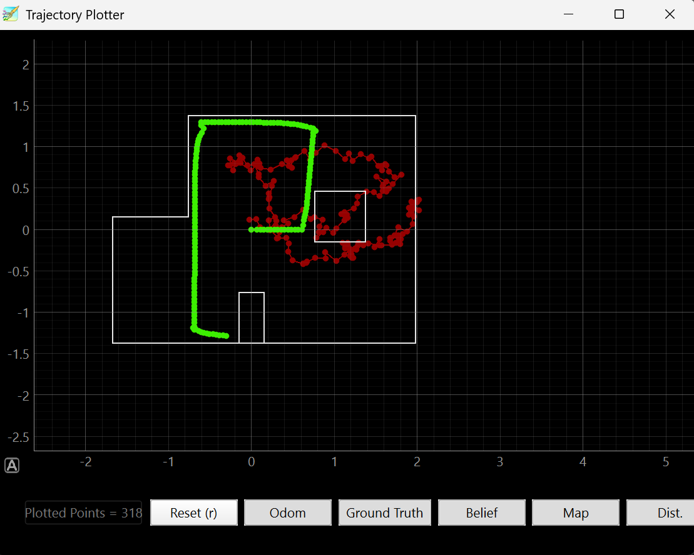
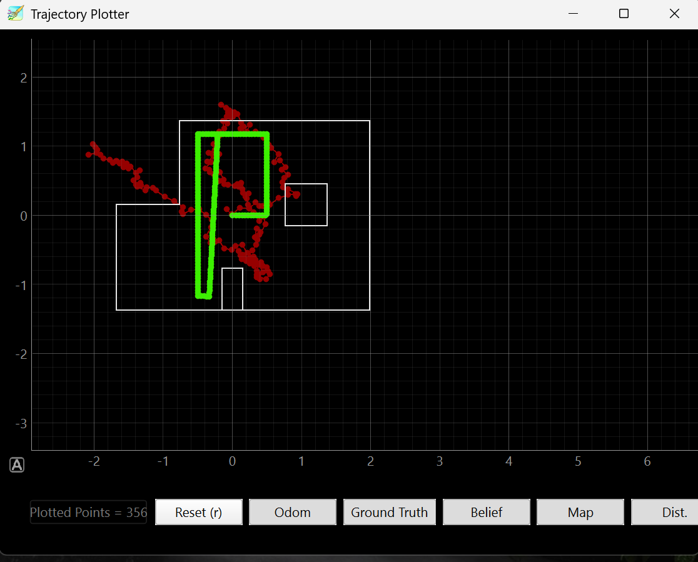
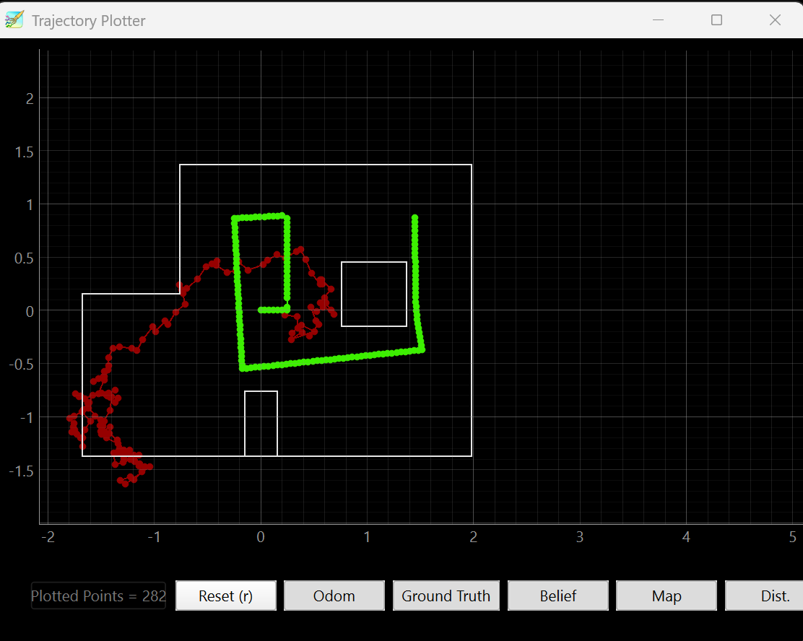
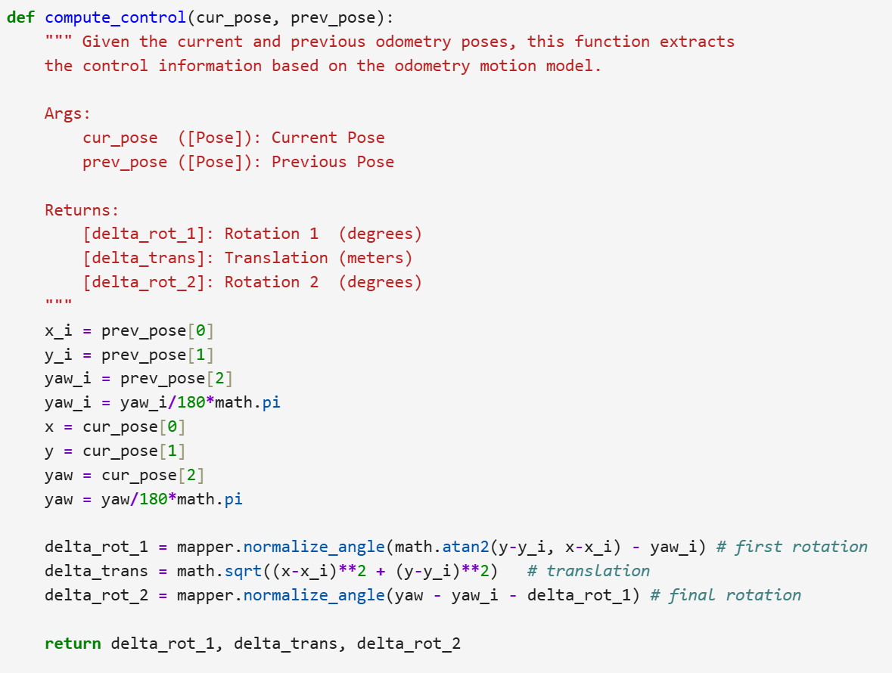
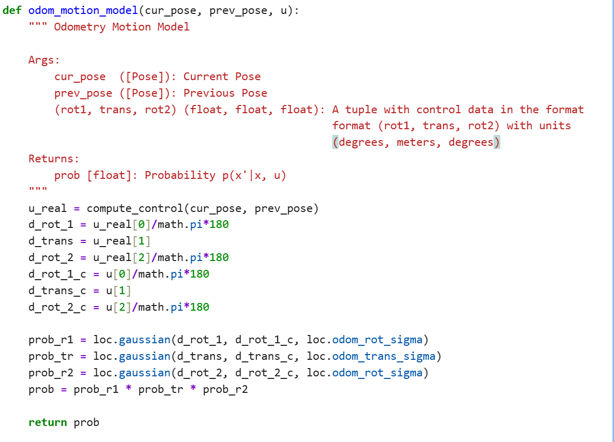
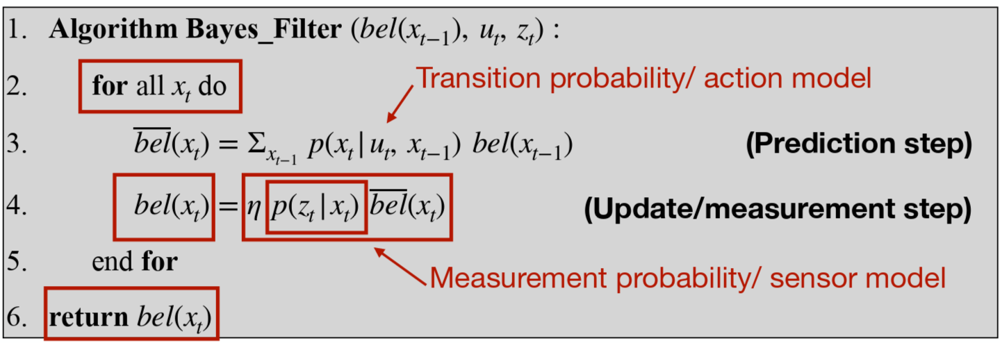
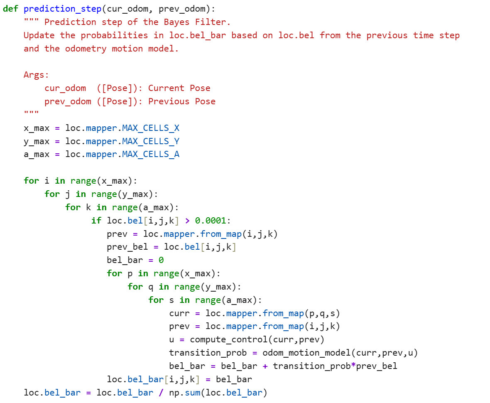
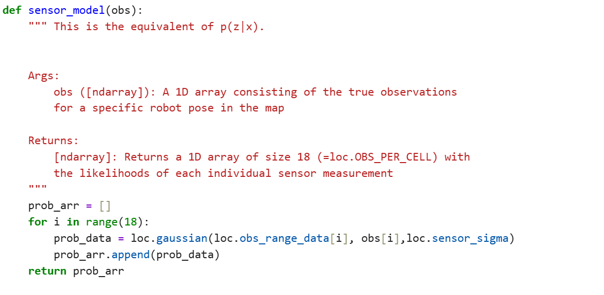
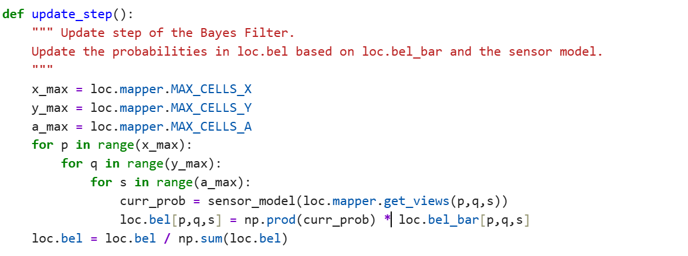
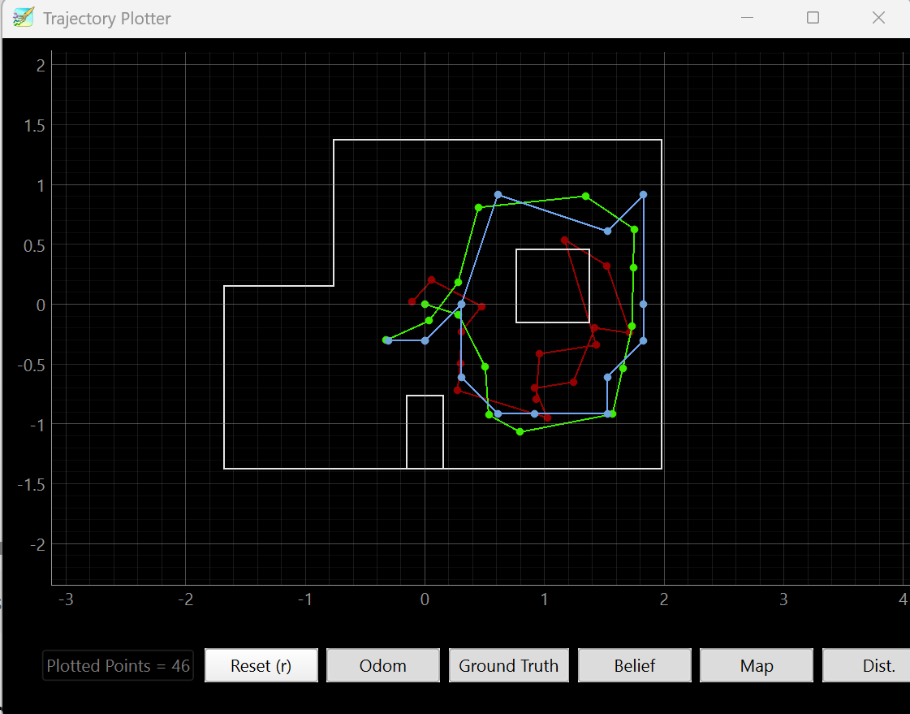

Lab 10：Grid Localization using Bayes Filter (sim)
Objective
The objective of this lab is to implement grid localization using bayes filter.
Pre Lab

I used to only plot without movement command which leads to plot seeing no movement of the robot but repeating of the same location. Therefore, I have movement command together with plot happening in the same timelines with code snippets like below repeating.

After that, I added the plotting the dot at the beginning of the motion to enable the first line of motion gets plotted without which plotting is only composed of three lines. So that I get graph such as below: as we can see, there is quite difference between odometry and ground truth. Odometry uses sensor data to estimate the change while Ground Truth basically is the direct accurate measurement of the position in this case. Belief is the probability distribution across all the grid cells while Predicted Belief represents the tempoary belief after prediction step before sensor model.

For close loop, I have while statement to constantly measure the distance at the front towards the obstable. From multiple testing, I found out that it is appropriate to make the stop when it is about 0.25m away from the obstacle, which is neither too far from the wall nor too close to the wall so robot body's interaction with the wall change the path direction (when turning only 0.1 m away.) The graph below was conducted in a velocity of 0.5m/s when the control of the displacement is pretty high. (the turn is instaneous without delaying in distance) The highest speed robot can go at turning of 0.25 m away from obstable is 0.6m/s without crashing or path direction changed. Through testing, the calculated turn of 90 degrees existed delaying which made the robot turn over 90 degrees, therefore I reduce the turning time.

Turn at 0.1 m at a speed of 0.5m/s.

Turn at 0.25 m at a speed of 0.5m/s.

Turn at 0.5 m at a speed of 0.5m/s.
Helper function: Compute Control

This step is to do the conversion for two poses from raw data to motion command form in preparation for odometry motion model. In the context of this and following functions, poses refer to numpy arrays with elements (x,y,yaw).
Helper function: Odometry Motion Model

Odometry motion model captures the probability that robot can position in current pose from previous pose based on given command u. I used current poses and previous poses to estimate the ideal movement that robot could have taken and compare it with control input based on odometry. The higher similarity both turned out to be, the higher transitional possibility it is. Because loc.odom_rot_sigma are in degrees, the unit conversion is needed.
Helper function: Prediction Step

To estimate every grid cell's transition proability, I used for loops to calculate them based on equation on the second row above. u calculated the movement estimated by odometry which becomes control input here for the prediction. After having both previous and current poses converted from grid index, I have each contribution from previous belief timing transition probability from odometry motion model.

Helper function: Sensor Model

In sensor model, I calculated the chances that expected 360-degree scan matches with the real scan from simulator at a specific cell by Gaussian noise model.
Helper function: Update Step

Update Step function correct the predicted belief by bayes filter: cells would have higher probability if their expected sensor readings match with actual data from sensor. Then it is normalized to have all the probabilities suming to 1.
Bayes Filter Implementation
Watch the video of simulating robot performed a non-collapse navigation.
From the map, I can see that odometry did a bad job estimating the location changes. After fixing the unit conversion and normalization and optimizing the computation, bayes filter does a decent job matching with ground truth.
Reference
I referred to Selina Yao's and Trevor Dales' pages for debugging and understanding bayes filter.